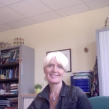

|

|
PATTERN FORMATION IN NATUREHelena ZapolskyUniversité de RouenHalf a century ago, the great mathematician Alan Turing wrote his first and last paper on biology and chemistry, about how a certain type of chemical reaction ought to produce many patterns seen in nature. From this moment, the problem of Turing pattern formation has attracted much attention in different fields of nonlinear science. Striped and mottled Turing patterns are found throughout nature-on a zebra’s coat, on a fish’s skin, on a sand dune, in a microstructure in alloys and in the ocular dominance columns of the brain. Recently, the Turing’s idea was also used to describe the self-organizing systems. In my lectures I will discuss the formation of patterns and structures obtained through numerical simulation of the Turing mechanism in two and three dimensions. The forming patterns are found to depend strongly from the system parameters, however there is some universality in a rich variety of patterns: the stripes and spots in 2D, and lamellae and spherical droplets in 3D arranged in structures of high symmetry, with or without defects or distortions. In my first lecture I will present the continuous description of system using phase field formalism and Swift-Hohenberg equation. The atomistic description of the dynamic in systems is the object of the second lecture. In my last lecture I will discuss about the link between these two approaches as well as the link between the pattern on fish’s skin, the spinodal decomposition and sand dune stripes.A few papers to read:
Personal webpage |